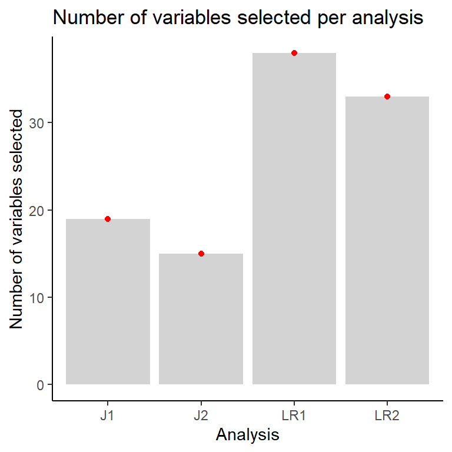
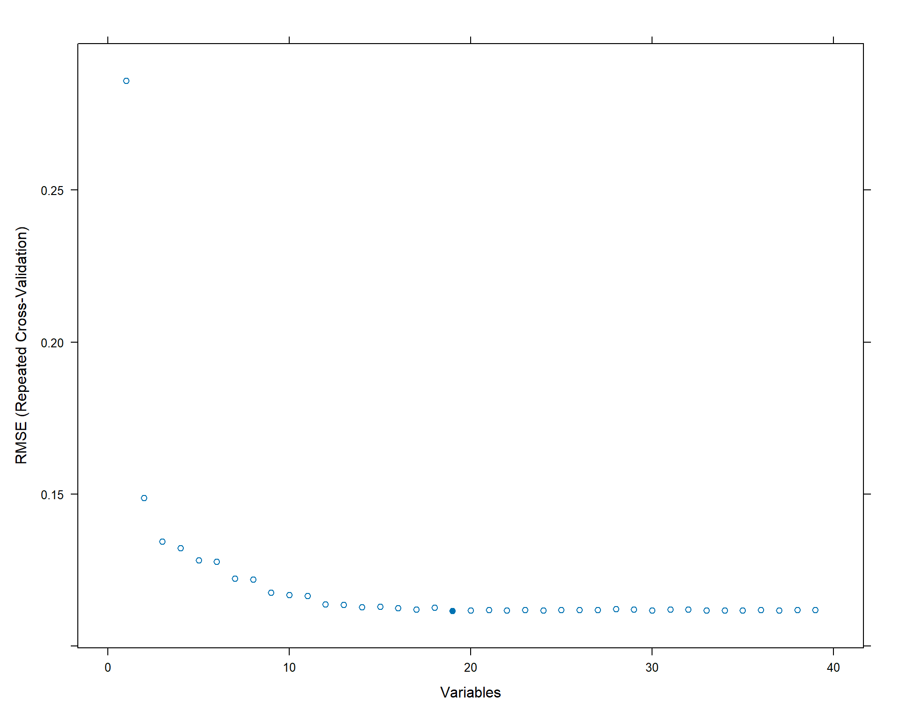
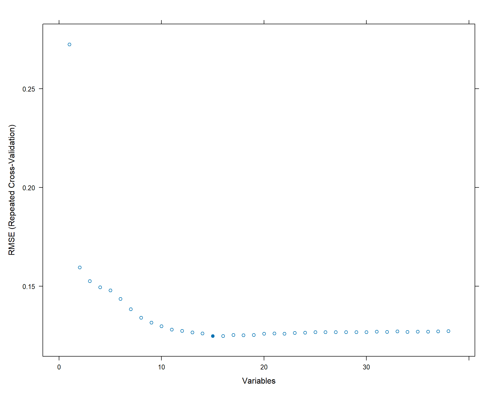
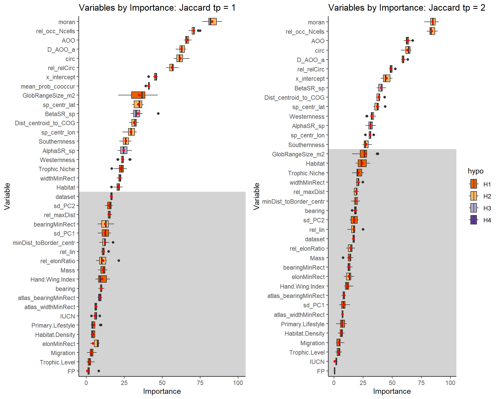
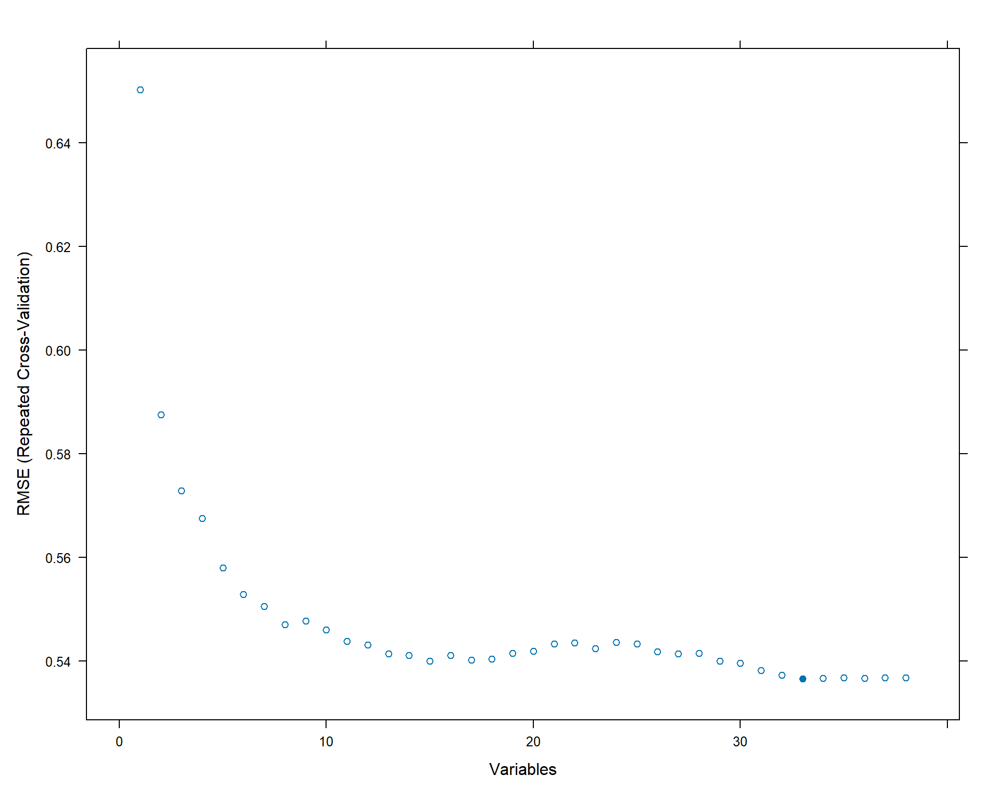
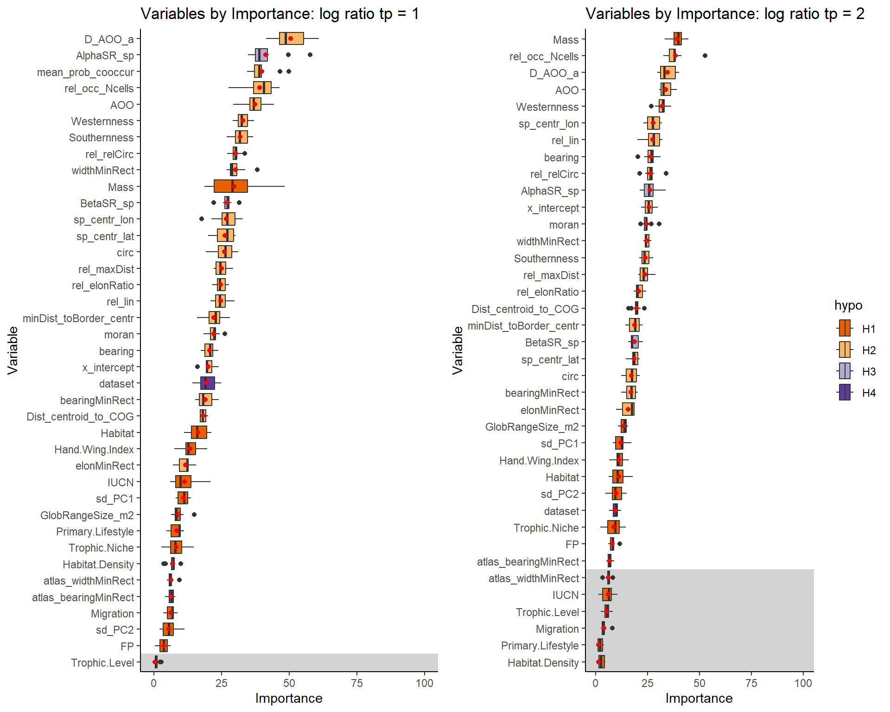

![]()
rm(list = ls())
source("src/functions.R")2 Script 2 - Recursive Feature Selection
3 Recursive feature elimination
I will use recursive feature elimination to reduce the dimensionality of the data by removing variables that do not lead to an increase of model performance when included. I will apply this method, because most of my predictors were calculated from the same data and are thus not independent. Although checking for high correlations in one of the previous steps, any correlations between predictor variables may confuse the model during variation partitioning, as correlations make it impossible to discern which variable explains how much of the variation. This also reduces the probability of overfitting the model to the data as redundant features with correlated noise signals are removed.
The method being used relies on the randomForest package to recursively eliminate one predictor after another from the model, calculate the variable importance, rank these, average the importance across resamples and comparing the fit across models with different subsets of the set of predictors. The workflow is set in the caret helper function rfFuncs().
pckgs <- c("dplyr", "ggplot2", "reshape2",
"ggcorrplot",
"caret", "recipes", "caretEnsemble",
"randomForest",
"gridExtra", "kableExtra", "tidyr")
install_and_load(pckgs)# Load workspace to save computing time:
## it has: varPart from ranger models
## recursive feature selection results
load("data/RData/02_rfe_full_vs_reduced.RData")3.0.1 Predictor importance / Recursive Feature Selection
We will set up a loop that runs through the four response variables that I am investigating. The models from which the variable importance is calculated are run for 5000 trees each across 10 resamples. Again I will be using 10-fold repeated cross-validation with 3 repeats to evaluate the performance of the models.
index_list <- list(indices_J1, indices_J2, indices_LR1, indices_LR2)
dat_train_list <- list(dat_train_J1, dat_train_J2, dat_train_LR1, dat_train_LR2)
saved_profiles <- replicate(4, list())
# names(saved_profiles) <- c("J1", "J2", "LR1", "LR2")
save_imp <- replicate(4, list())
# names(save_imp) <- c("J1", "J2", "LR1", "LR2")
response_list <- c("Jaccard", "Jaccard", "log_R2_1", "log_R2_1")
for(j in seq_along(1:4)){
## Loop through differet datasets/Analyses
indices <- index_list[[j]]
dat_train <- dat_train_list[[j]]
response <- response_list[[j]]
saved_profiles[[j]] <- replicate(4, list())
save_imp[[j]] <- replicate(4, list())
## Recursive feature selection:
set.seed(42)
ctrl <- rfeControl(
functions = rfFuncs,
method = "repeatedcv",
number = 10,
repeats = 3,
returnResamp = "all", # we need all resamples
verbose = FALSE,
index = indices,
saveDetails = TRUE)
ctrl$functions$rank <- rank #adjust rank function
## Set variables for recursive feature elimination
subsets <- c(1:50) # number of predictors in each run
x <- dat_train %>% select(!all_of(response))
y <- dat_train %>% pull(response)
## First run:
set.seed(42)
rfProfile <- rfe(x, y, ntree = 5000, sizes = subsets, rfeControl = ctrl)
rfProfile
# Most important predictors:
imp <- as.data.frame(rfProfile$fit$importance) %>%
round(3) %>%
select(`%IncMSE`) %>%
mutate(var = row.names(.)) %>%
arrange(desc(`%IncMSE`))
saved_profiles[[j]] <- rfProfile
save_imp[[j]] <- imp
}
saveRDS(saved_profiles, file = "data/02_rfe_saved_profiles_5000.rds")
save.image(file = "data/RData/02_rfe_5000.RData")saved_profiles[[1]]$bestSubset[1] 19saved_profiles[[2]]$bestSubset[1] 15saved_profiles[[3]]$bestSubset[1] 38saved_profiles[[4]]$bestSubset[1] 33results <- replicate(4, list())
for (i in seq_along(1:4)){
resamp_res <- saved_profiles[[i]]
res <- slice_min(resamp_res$results, RMSE)
results[[i]] <- res
}
names(results) <- c("J1", "J2", "LR1", "LR2")
rfe_res <- do.call(rbind, results)
rfe_res$dd <- rownames(rfe_res)
# Bar plot: Nr. Vars selected for each analysis
ggplot(data = rfe_res, aes(x = dd, y = Variables)) +
geom_col(fill = "lightgrey") +
geom_point(data = rfe_res %>% group_by(dd) %>% summarize(mean_Variables = mean(Variables)),
aes(x = dd, y = mean_Variables), color = "red") +
theme_classic()+
labs(title = "Number of variables selected per analysis", y = "Number of variables selected", x = "Analysis")
# Add mean importance across resamples to results
saved_profiles[[1]]$variables <- saved_profiles[[1]]$variables %>% filter(Variables == 39) %>%
group_by(var) %>%
mutate(Overall_mean_resamp = mean(Overall)) %>%
mutate(hypo = case_when(var %in% H1_vars ~ "H1",
var %in% H2_vars ~ "H2",
var %in% H3_vars ~ "H3",
var %in% H4_vars ~ "H4"))
saved_profiles[[2]]$variables <- saved_profiles[[2]]$variables %>% filter(Variables == 38) %>%
group_by(var) %>%
mutate(Overall_mean_resamp = mean(Overall))%>%
mutate(hypo = case_when(var %in% H1_vars ~ "H1",
var %in% H2_vars ~ "H2",
var %in% H3_vars ~ "H3",
var %in% H4_vars ~ "H4"))
saved_profiles[[3]]$variables <- saved_profiles[[3]]$variables %>% filter(Variables == 39) %>%
group_by(var) %>%
mutate(Overall_mean_resamp = mean(Overall))%>%
mutate(hypo = case_when(var %in% H1_vars ~ "H1",
var %in% H2_vars ~ "H2",
var %in% H3_vars ~ "H3",
var %in% H4_vars ~ "H4"))
saved_profiles[[4]]$variables <- saved_profiles[[4]]$variables %>% filter(Variables == 38) %>%
group_by(var) %>%
mutate(Overall_mean_resamp = mean(Overall))%>%
mutate(hypo = case_when(var %in% H1_vars ~ "H1",
var %in% H2_vars ~ "H2",
var %in% H3_vars ~ "H3",
var %in% H4_vars ~ "H4"))The following plots show, that the data that can be used to predict Jaccard can be reduced enormously without losing predictive performance.
For Jaccard1 the
reduced model yields: RMSE = 0.1116 and R² = 0.8450,
while the full model yields: RMSE = 0.1118 and R² = 0.8455.
showing even a slightly reduced RMSE compared to the full model.
For Jaccard 2 the
reduced model yields: RMSE = 0.1248 and R² = 0.8077,
while the full model yields: RMSE = 0.1273 and R² = 0.8022.
# On best models (best hyper parameters)
saved_profiles[[1]]$fit
Call:
randomForest(x = x, y = y, ntree = 5000, importance = TRUE)
Type of random forest: regression
Number of trees: 5000
No. of variables tried at each split: 6
Mean of squared residuals: 0.0125195
% Var explained: 84.32saved_profiles[[1]]$fit %>% varImp() Overall
moran 91.33522
rel_occ_Ncells 73.52737
AOO 71.12573
D_AOO_a 64.34177
circ 70.42473
rel_relCirc 61.36701
x_intercept 50.75122
mean_prob_cooccur 45.22394
GlobRangeSize_m2 47.23681
BetaSR_sp 40.10775
sp_centr_lat 49.11838
Dist_centroid_to_COG 37.57963
sp_centr_lon 36.88745
Southernness 32.69555
AlphaSR_sp 32.19241
Westernness 28.18731
Trophic.Niche 32.41874
widthMinRect 25.17650
Habitat 26.49305plot(saved_profiles[[1]])
saved_profiles[[2]]$fit
Call:
randomForest(x = x, y = y, ntree = 5000, importance = TRUE)
Type of random forest: regression
Number of trees: 5000
No. of variables tried at each split: 5
Mean of squared residuals: 0.01538098
% Var explained: 80.63saved_profiles[[2]]$fit %>% varImp() Overall
moran 102.00481
rel_occ_Ncells 92.96592
AOO 69.26302
circ 77.51338
D_AOO_a 62.50982
rel_relCirc 54.99068
x_intercept 49.80143
BetaSR_sp 61.36546
Dist_centroid_to_COG 51.54155
sp_centr_lat 57.36471
Westernness 47.74906
AlphaSR_sp 48.76303
sp_centr_lon 42.66040
Southernness 39.52615
GlobRangeSize_m2 40.83284plot(saved_profiles[[2]])
## Plot the importances
grid.arrange(ncol=2,
saved_profiles[[1]]$variables %>% filter(Variables == 39) %>%
group_by(var) %>%
ggplot()+
geom_rect(aes(xmin = -Inf, xmax = Inf, ymin = -Inf, ymax = (39.5-saved_profiles[[1]]$bestSubset)), fill = "lightgray", alpha = 0.9) +
geom_boxplot(aes(y = reorder(var, Overall), x = Overall, fill = hypo ), show.legend = FALSE)+
geom_point(aes(x = Overall_mean_resamp, y = var), col = "red", alpha = 0.4)+
theme_classic()+
xlim(0,100)+
scale_fill_manual(values = c("#e66101", "#fdb863", "#b2abd2", "#5e3c99")) +
labs(title = "Variables by Importance: Jaccard tp = 1", x = "Importance", y = "Variable"),
saved_profiles[[2]]$variables %>% filter(Variables == 38) %>%
group_by(var) %>%
ggplot()+
geom_rect(aes(xmin = -Inf, xmax = Inf, ymin = -Inf, ymax = (39.5-saved_profiles[[2]]$bestSubset)), fill = "lightgray", alpha = 0.9) +
geom_boxplot(aes(y = reorder(var, Overall), x = Overall, fill = hypo ))+
geom_point(aes(x = Overall_mean_resamp, y = var), col = "red", alpha = 0.4)+
theme_classic()+
xlim(0,100)+
scale_fill_manual(values = c("#e66101", "#fdb863", "#b2abd2", "#5e3c99")) +
labs(title = "Variables by Importance: Jaccard tp = 2", x = "Importance", y = "Variable")
)
For log ratio of AOO, we can see that we need more predictors than for Jaccard to predict it from the data. As expected before, the model performance is generally low (both R² = 0.147) and the models try to include more information to discern the relationship between predictors and the response that does not capture a big signal from temporal change.
# On best models (best hyper parameters)
saved_profiles[[3]]$fit
Call:
randomForest(x = x, y = y, ntree = 5000, importance = TRUE)
Type of random forest: regression
Number of trees: 5000
No. of variables tried at each split: 12
Mean of squared residuals: 0.2725458
% Var explained: 14.17saved_profiles[[3]]$fit %>% varImp() Overall
D_AOO_a 53.467034
AlphaSR_sp 43.856405
mean_prob_cooccur 42.023773
rel_occ_Ncells 42.780196
AOO 42.377593
Westernness 40.014980
Southernness 35.325639
Mass 32.166045
widthMinRect 32.908904
rel_relCirc 32.760661
sp_centr_lon 29.445915
BetaSR_sp 27.553994
sp_centr_lat 24.911582
circ 24.646248
rel_maxDist 25.929813
rel_lin 27.227265
rel_elonRatio 25.132525
minDist_toBorder_centr 25.416581
moran 26.181974
bearing 25.113030
x_intercept 21.269034
dataset 20.681599
bearingMinRect 23.702513
Dist_centroid_to_COG 21.905751
Habitat 19.012495
Hand.Wing.Index 15.466506
IUCN 13.876409
elonMinRect 12.003937
sd_PC1 12.825717
Trophic.Niche 7.359268
GlobRangeSize_m2 10.700723
Primary.Lifestyle 9.529687
Habitat.Density 7.941689
sd_PC2 5.152136
Migration 6.605318
atlas_widthMinRect 6.358681
atlas_bearingMinRect 4.616524
FP 3.202217plot(saved_profiles[[3]])
saved_profiles[[4]]$fit
Call:
randomForest(x = x, y = y, ntree = 5000, importance = TRUE)
Type of random forest: regression
Number of trees: 5000
No. of variables tried at each split: 11
Mean of squared residuals: 0.2661927
% Var explained: 14.17saved_profiles[[4]]$fit %>% varImp() Overall
Mass 45.115448
rel_occ_Ncells 43.674567
D_AOO_a 39.134253
AOO 37.233098
Westernness 36.412832
rel_lin 32.723516
sp_centr_lon 31.450716
bearing 29.763169
rel_relCirc 29.311984
AlphaSR_sp 26.790928
x_intercept 29.585169
moran 28.806598
widthMinRect 28.432642
Southernness 27.255666
rel_maxDist 26.508840
rel_elonRatio 21.958488
Dist_centroid_to_COG 22.487426
minDist_toBorder_centr 21.648734
BetaSR_sp 19.452901
sp_centr_lat 21.197363
circ 19.820529
bearingMinRect 17.630352
elonMinRect 21.386879
GlobRangeSize_m2 15.568014
sd_PC1 13.742048
Habitat 10.761857
Hand.Wing.Index 11.910291
sd_PC2 11.296875
Trophic.Niche 11.374176
dataset 12.149539
FP 8.880384
IUCN 8.369908
atlas_bearingMinRect 8.242545plot(saved_profiles[[4]])
grid.arrange(ncol=2,
saved_profiles[[3]]$variables %>% filter(Variables == 39) %>%
group_by(var) %>%
ggplot()+
geom_rect(aes(xmin = -Inf, xmax = Inf, ymin = -Inf, ymax = (39.5-saved_profiles[[3]]$bestSubset)), fill = "lightgray", alpha = 0.9) +
geom_boxplot(aes(y = reorder(var, Overall), x = Overall, fill = hypo ), show.legend = FALSE)+
geom_point(aes(x = Overall_mean_resamp, y = var), col = "red", alpha = 0.4)+
theme_classic()+
xlim(0,100)+
scale_fill_manual(values = c("#e66101", "#fdb863", "#b2abd2", "#5e3c99")) +
labs(title = "Variables by Importance: log ratio tp = 1", x = "Importance", y = "Variable"),
saved_profiles[[4]]$variables %>% filter(Variables == 38) %>%
group_by(var) %>%
ggplot()+
geom_rect(aes(xmin = -Inf, xmax = Inf, ymin = -Inf, ymax = (39.5-saved_profiles[[4]]$bestSubset)), fill = "lightgray", alpha = 0.9) +
geom_boxplot(aes(y = reorder(var, Overall), x = Overall, fill = hypo ))+
geom_point(aes(x = Overall_mean_resamp, y = var), col = "red", alpha = 0.4)+
theme_classic()+
xlim(0,100)+
scale_fill_manual(values = c("#e66101", "#fdb863", "#b2abd2", "#5e3c99")) +
labs(title = "Variables by Importance: log ratio tp = 2", x = "Importance", y = "Variable")
)
Imp_list <- replicate(4, list())
Imp_list[[1]] <- saved_profiles[[1]]$variables %>%
select(Overall_mean_resamp, var) %>%
rename("imp" = "Overall_mean_resamp") %>%
mutate(model = "J1")
Imp_list[[2]] <- saved_profiles[[2]]$variables %>%
select(Overall_mean_resamp, var) %>%
rename("imp" = "Overall_mean_resamp")%>%
mutate(model = "J2")
Imp_list[[3]] <- saved_profiles[[3]]$variables %>%
select(Overall_mean_resamp, var) %>%
rename("imp" = "Overall_mean_resamp")%>%
mutate(model = "LR1")
Imp_list[[4]] <- saved_profiles[[4]]$variables %>%
select(Overall_mean_resamp, var) %>%
rename("imp" = "Overall_mean_resamp")%>%
mutate(model = "LR2")
# Included vars:
J1_vars <- saved_profiles[[1]]$fit$importance
J2_vars <- saved_profiles[[2]]$fit$importance
LR1_vars <- saved_profiles[[3]]$fit$importance
LR2_vars <- saved_profiles[[4]]$fit$importance
Imp_df <- do.call(rbind, Imp_list)
wide <- Imp_df %>%
tidyr::pivot_wider(names_from = c(model),
values_from = imp, names_sep = "_",
values_fn = mean) %>%
arrange(desc(J1)) %>%
group_by(var) %>%
mutate(hypo = case_when(var %in% H1_vars ~ "H1",
var %in% H2_vars ~ "H2",
var %in% H3_vars ~ "H3",
var %in% H4_vars ~ "H4")) %>%
mutate(Include_J1 = case_when(var %in% c(row.names(J1_vars)) ~ 1,
.default = 0),
Include_J2 = case_when(var %in% c(row.names(J2_vars)) ~ 1,
.default = 0),
Include_LR1 = case_when(var %in% c(row.names(LR1_vars)) ~ 1,
.default = 0),
Include_LR2 = case_when(var %in% c(row.names(LR2_vars)) ~ 1,
.default = 0))
wide %>% write.csv("data/csv/02_all_var_imp_5000.csv")
wide %>% kableExtra::kable()| var | J1 | J2 | LR1 | LR2 | hypo | Include_J1 | Include_J2 | Include_LR1 | Include_LR2 |
|---|---|---|---|---|---|---|---|---|---|
| moran | 82.8820210 | 84.8191381 | 22.1424265 | 24.604191 | H2 | 1 | 1 | 1 | 1 |
| rel_occ_Ncells | 70.8652725 | 83.9735638 | 39.0385763 | 38.272210 | H2 | 1 | 1 | 1 | 1 |
| AOO | 66.4743491 | 63.3642598 | 37.3632755 | 33.766163 | H2 | 1 | 1 | 1 | 1 |
| D_AOO_a | 62.8893578 | 59.6703099 | 50.6253329 | 34.479309 | H2 | 1 | 1 | 1 | 1 |
| circ | 61.9599030 | 63.1757655 | 26.0497190 | 17.091905 | H2 | 1 | 1 | 1 | 1 |
| rel_relCirc | 56.5495632 | 49.1513509 | 30.1353236 | 26.420131 | H2 | 1 | 1 | 1 | 1 |
| x_intercept | 45.3946346 | 44.9922471 | 20.1251542 | 25.695247 | H2 | 1 | 1 | 1 | 1 |
| mean_prob_cooccur | 41.1078158 | NA | 39.8594797 | NA | H2 | 1 | 0 | 1 | 0 |
| GlobRangeSize_m2 | 34.9742767 | 26.5297079 | 9.0472291 | 13.432265 | H1 | 1 | 1 | 1 | 1 |
| sp_centr_lat | 34.2845946 | 37.3041200 | 26.2374161 | 18.604352 | H2 | 1 | 1 | 1 | 1 |
| BetaSR_sp | 34.1365896 | 40.5188540 | 27.0775119 | 18.650763 | H3 | 1 | 1 | 1 | 1 |
| Dist_centroid_to_COG | 31.6362380 | 38.6065431 | 18.2630677 | 19.590861 | H2 | 1 | 1 | 1 | 1 |
| sp_centr_lon | 29.5053361 | 30.9034602 | 26.8312540 | 27.639437 | H2 | 1 | 1 | 1 | 1 |
| Southernness | 25.9914367 | 27.6526078 | 31.9572134 | 23.865281 | H2 | 1 | 1 | 1 | 1 |
| AlphaSR_sp | 24.7835928 | 31.4293611 | 41.3503511 | 26.141546 | H3 | 1 | 1 | 1 | 1 |
| Westernness | 24.2591336 | 32.3956430 | 32.8733254 | 31.817972 | H2 | 1 | 1 | 1 | 1 |
| Trophic.Niche | 22.6129904 | 21.0759365 | 8.2593365 | 8.666313 | H1 | 1 | 0 | 1 | 1 |
| widthMinRect | 22.1044076 | 20.8770370 | 30.1256173 | 24.599412 | H2 | 1 | 0 | 1 | 1 |
| Habitat | 20.9731215 | 24.2638400 | 16.2730421 | 11.263801 | H1 | 1 | 0 | 1 | 1 |
| dataset | 16.6119794 | 16.8023604 | 19.6170457 | 9.470622 | H4 | 0 | 0 | 1 | 1 |
| sd_PC2 | 15.1902667 | 17.3002761 | 5.5403415 | 9.895485 | H1 | 0 | 0 | 1 | 1 |
| rel_maxDist | 15.1561925 | 18.9873656 | 25.0670073 | 23.590558 | H2 | 0 | 0 | 1 | 1 |
| bearingMinRect | 12.5638852 | 12.8551977 | 19.0792310 | 16.874969 | H2 | 0 | 0 | 1 | 1 |
| sd_PC1 | 12.3681107 | 8.1894032 | 10.9575858 | 12.084903 | H1 | 0 | 0 | 1 | 1 |
| minDist_toBorder_centr | 12.2949982 | 18.7114889 | 22.2163198 | 18.690911 | H2 | 0 | 0 | 1 | 1 |
| rel_lin | 11.4411405 | 16.9448564 | 24.6350665 | 27.526147 | H2 | 0 | 0 | 1 | 1 |
| rel_elonRatio | 11.2294263 | 14.1807573 | 24.7065904 | 20.822811 | H2 | 0 | 0 | 1 | 1 |
| Mass | 11.1457824 | 13.4190191 | 29.7072242 | 39.248570 | H1 | 0 | 0 | 1 | 1 |
| Hand.Wing.Index | 10.4048676 | 11.5684847 | 13.3822936 | 11.264265 | H1 | 0 | 0 | 1 | 1 |
| bearing | 9.9802882 | 18.2672334 | 20.5966645 | 26.434523 | H2 | 0 | 0 | 1 | 1 |
| atlas_bearingMinRect | 8.9047101 | 8.5954997 | 6.3225686 | 6.762056 | H4 | 0 | 0 | 1 | 1 |
| atlas_widthMinRect | 6.3332383 | 7.3012182 | 6.4013864 | 6.075062 | H4 | 0 | 0 | 1 | 0 |
| IUCN | 5.6639585 | 0.6671593 | 11.3100986 | 5.923484 | H1 | 0 | 0 | 1 | 1 |
| Primary.Lifestyle | 5.1618988 | 6.8808857 | 8.3712787 | 1.415528 | H1 | 0 | 0 | 1 | 0 |
| Habitat.Density | 4.4324581 | 6.2460900 | 6.8261565 | 1.311792 | H1 | 0 | 0 | 1 | 0 |
| elonMinRect | 4.4299425 | 12.8025365 | 11.6332086 | 15.595609 | H2 | 0 | 0 | 1 | 1 |
| Migration | 3.0650051 | 4.4710763 | 6.2178447 | 3.972399 | H1 | 0 | 0 | 1 | 0 |
| Trophic.Level | 2.3325089 | 4.0068964 | 0.4568504 | 5.428407 | H1 | 0 | 0 | 0 | 0 |
| FP | 0.6754497 | -2.5765705 | 3.6091049 | 8.141638 | H1 | 0 | 0 | 1 | 1 |
4 Compare reduced and full ranger models
Since the rfe function works with the randomForest package, we will check if we get similarly better results with ranger and the reduced model. ::: panel-tabset ## Jaccard 1
J1_vars <- wide %>% filter(Include_J1 == 1) %>% pull(var)
response <- "Jaccard"
indices <- indices_J1
dat_train <- dat_train_J1
# Define training control ==========================================================
trainControl <- trainControl(
method = "repeatedcv",
number = 10,
repeats = 3,
savePredictions = "final",
returnResamp = "all",
verboseIter = FALSE,
index = indices)
## Train ranger model ==========================================================
set.seed(42)
tictoc::tic("ranger")
J1_full <- train(
as.formula(paste(response, "~ .")),
data = dat_train,
method = "ranger",
trControl = trainControl,
importance = "permutation",
scale.permutation.importance = TRUE,
num.trees = 5000,
respect.unordered.factors = TRUE,
oob.error = TRUE,
tuneLength = 20)
tictoc::toc()
set.seed(42)
tictoc::tic("ranger")
J1_reduced <- train(
as.formula(paste(response, "~ .")),
data = dat_train %>% select(response, all_of(J1_vars)),
method = "ranger",
trControl = trainControl,
importance = "permutation",
scale.permutation.importance = TRUE,
num.trees = 5000,
respect.unordered.factors = TRUE,
oob.error = TRUE,
tuneLength = 20)
tictoc::toc()
J1_full$finalModel
J1_full$results
J1_reduced$finalModel
J1_reduced$results4.1 Jaccard 2
J2_vars <- wide %>% filter(Include_J2 == 1) %>% pull(var)
response <- "Jaccard"
indices <- indices_J2
dat_train <- dat_train_J2
# Define training control ==========================================================
trainControl <- trainControl(
method = "repeatedcv",
number = 10,
repeats = 3,
savePredictions = "final",
returnResamp = "all",
verboseIter = FALSE,
index = indices)
## Train ranger model ==========================================================
set.seed(42)
tictoc::tic("ranger")
J2_full <- train(
as.formula(paste(response, "~ .")),
data = dat_train,
method = "ranger",
trControl = trainControl,
importance = "permutation",
scale.permutation.importance = TRUE,
num.trees = 5000,
respect.unordered.factors = TRUE,
oob.error = TRUE,
tuneLength = 20)
tictoc::toc()
set.seed(42)
tictoc::tic("ranger")
J2_reduced <- train(
as.formula(paste(response, "~ .")),
data = dat_train %>% select(response, all_of(J2_vars)),
method = "ranger",
trControl = trainControl,
importance = "permutation",
scale.permutation.importance = TRUE,
num.trees = 5000,
respect.unordered.factors = TRUE,
oob.error = TRUE,
tuneLength = 20)
tictoc::toc()
J2_full$finalModel
J2_full$results
J2_reduced$finalModel
J2_reduced$results4.2 Log Ratio 1
LR1_vars <- wide %>% filter(Include_LR1 == 1) %>% pull(var)
response <- "log_R2_1"
indices <- indices_LR1
dat_train <- dat_train_LR1
# Define training control ==========================================================
trainControl <- trainControl(
method = "repeatedcv",
number = 10,
repeats = 3,
savePredictions = "final",
returnResamp = "all",
verboseIter = FALSE,
index = indices)
## Train ranger model ==========================================================
set.seed(42)
tictoc::tic("ranger")
LR1_full <- train(
as.formula(paste(response, "~ .")),
data = dat_train,
method = "ranger",
trControl = trainControl,
importance = "permutation",
scale.permutation.importance = TRUE,
num.trees = 5000,
respect.unordered.factors = TRUE,
oob.error = TRUE,
tuneLength = 20)
set.seed(42)
tictoc::tic("ranger")
LR1_reduced <- train(
as.formula(paste(response, "~ .")),
data = dat_train %>% select(response, all_of(LR1_vars)),
method = "ranger",
trControl = trainControl,
importance = "permutation",
scale.permutation.importance = TRUE,
num.trees = 5000,
respect.unordered.factors = TRUE,
oob.error = TRUE,
tuneLength = 20)
tictoc::toc()
LR1_full$finalModel
LR1_full$results
LR1_reduced$finalModel
LR1_reduced$results4.3 Log Ratio 2
LR2_vars <- wide %>% filter(Include_LR2 == 1) %>% pull(var)
response <- "log_R2_1"
indices <- indices_LR2
dat_train <- dat_train_LR2
# Define training control ==========================================================
trainControl <- trainControl(
method = "repeatedcv",
number = 10,
repeats = 3,
savePredictions = "final",
returnResamp = "all",
verboseIter = FALSE,
index = indices)
## Train ranger model ==========================================================
set.seed(42)
tictoc::tic("ranger")
LR2_full <- train(
as.formula(paste(response, "~ .")),
data = dat_train,
method = "ranger",
trControl = trainControl,
importance = "permutation",
scale.permutation.importance = TRUE,
num.trees = 5000,
respect.unordered.factors = TRUE,
oob.error = TRUE,
tuneLength = 20)
tictoc::toc()
set.seed(42)
tictoc::tic("ranger")
LR2_reduced <- train(
as.formula(paste(response, "~ .")),
data = dat_train %>% select(response, all_of(LR2_vars)),
method = "ranger",
trControl = trainControl,
importance = "permutation",
scale.permutation.importance = TRUE,
num.trees = 5000,
respect.unordered.factors = TRUE,
oob.error = TRUE,
tuneLength = 20)
tictoc::toc()
LR2_full$finalModel
LR2_full$results
LR2_reduced$finalModel
LR2_reduced$results:::
# save.image("data/RData/02_rfe_full_vs_reduced.RData")
# selected_predictors <- list(J1_vars, J2_vars, LR1_vars, LR2_vars)
# saveRDS(selected_predictors, "data/rds/selected_predictors_list.rds")